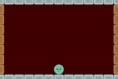
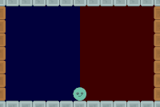
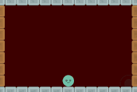
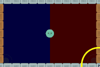
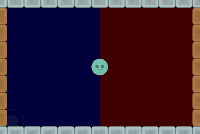

Easy Inputs (ssk.easyInputs.*)
This library provides a number of factories that create easy input object instances. These objects dispatch Runtime events when touched. To use these events you simply add listeners to any part of your code that cares about the input.
(Images below have debugEn == true. Normally, the touch areas are invisible.)
| One Touch | Two Touch |
|---|---|
|  |  |
- One Touch - The entire screen is a button.
- Two Touch - The screen is split down the middle and each half (left & right) is treated as a button.
| One Stick | Two Stick | One Stick + One Touch |
|---|---|---|
|  |  |  |
- One Stick - A single virtual joystick is created anywhere you touch the screen and tracks your finger till you lift it.
- Two Stick - The screen is split in half horizontally, each side (left & right) hosting a virtual joystick.
- One Stick + One Touch - One side of the screen is a button, one side hosts a virtual joystick.
Note: Each of the three 'stick' factories uses the 'Joystick Factory' to build the virtual joystick(s).
Easy Input Factories
oneTouch
The entire screen is a button.
ssk.easyInputs.oneTouch.create( [ group [ , params ]] )
group(display.currentStage) - Display group to put input display object(s) into.params- Parameters used to configure the input object(s).debugEn(false) - Enable visual feedback to show input instance is working.fill({1,0,0}) - Fill color to use for 'touch area'.alpha(0) - Alpha to use for touch area.- If
debugEnistruethis defaults to0.25.
- If
eventName(onOneTouch) - Touching the 'touch area' posts (dispatches) a Runtime event with this name.- See 'Easy Input Listeners' below to learn about writing listeners.
keyboardEn(false) - If this istrue, you can use the keyboard while on the simulator to dispatch events.wandup(arrow) both posteventName.
appleTVEn(false) - This special setting lets you use the same input object on AppleTV.- Note: Pressing
buttonZon the Apple TV remote/controller postseventName.
- Note: Pressing
ssk.easyInputs.oneTouch.create( group, { debugEn = true, keyboardEn = true } )
twoTouch
The screen is split down the middle and each half (left & right) is treated as a button.
ssk.easyInputs.twoTouch.create( [ group [ , params ]] )
group(display.currentStage) - Display group to put input display object(s) into.params- Parameters used to configure the input object(s).debugEn(false) - Enable visual feedback to show input instance is working.leftFill({0,0,1}) - Fill color to use for left 'touch area'.rightFill({1,0,0}) - Fill color to use for right 'touch area'.alpha(0) - Alpha to use for left & right touch area.- If
debugEnistruethis defaults to0.25.
- If
leftEventName(onTwoTouchLeft) - Touching the left 'touch area' posts (dispatches) a Runtime event with this name.rightEventName(onTwoTouchRight) - Touching the right 'touch area' posts (dispatches) a Runtime event with this name.- See 'Easy Input Listeners' below to learn about writing listeners.
keyboardEn(false) - If this istrue, you can use the keyboard while on the simulator to dispatch events.
ssk.easyInputs.twoTouch.create( group, { debugEn = true, keyboardEn = true } )
oneStick
A single virtual joystick is created anywhere you touch the screen and tracks your finger till you lift it.
ssk.easyInputs.oneStick.create( [ group [ , params ]] )
group(display.currentStage) - Display group to put input display object(s) into.params- Parameters used to configure the input object(s).group(display.currentStage) - Display group to put input display object(s) into.params- Parameters used to configure the input object(s).debugEn(false) - Enable visual feedback to show input instance is working.fill({1,0,0}) - Fill color to use for 'touch area'.alpha(0) - Alpha to use for touch area.- If
debugEnistruethis defaults to0.25.
- If
eventName(onJoystick) - Touching the 'touch area' posts (dispatches) a Runtime event with this name.- See 'Easy Input Listeners' below to learn about writing listeners.
joyParams({}) - A table that is passed to the joystick helper to build joystick.- See 'Joystick Factory' below for more details on this table.
ssk.easyInputs.oneStick.create( group, { debugEn = true, joyParams = { doNorm = true } } )
twoStick
The screen is split in half horizontally, each side (left & right) hosting a virtual joystick.
ssk.easyInputs.twoStick.create( [ group [ , params ]] )
group(display.currentStage) - Display group to put input display object(s) into.params- Parameters used to configure the input object(s).debugEn(false) - Enable visual feedback to show input instance is working.leftFill({0,0,1}) - Fill color to use for left 'touch area'.rightFill({1,0,0}) - Fill color to use for right 'touch area'.alpha(0) - Alpha to use for left & right touch area.- If
debugEnistruethis defaults to0.25.
- If
leftEventName(onLeftJoystick) - Touching the left 'touch area' posts (dispatches) a Runtime event with this name.rightEventName(onRightJoystick) - Touching the right 'touch area' posts (dispatches) a Runtime event with this name.- See 'Easy Input Listeners' below to learn about writing listeners.
keyboardEn(false) - If this istrue, you can use the keyboard while on the simulator to dispatch events.leftJoyParams({}) - A table that is passed to the joystick helper to build joystick.rightJoyParams({}) - A table that is passed to the joystick helper to build joystick.- See 'Joystick Factory' below for more details on the joystick parameter tables.
ssk.easyInputs.twoStick.create( group, { debugEn = true, joyParams = { doNorm = true } } )
oneStickOneTouch
One side of the screen is a button, one side hosts a virtual joystick.
By default, the left-side is the joystick and the right is the button, but this can be swapped.
ssk.easyInputs.oneStickOneTouch.create( [ group [ , params ]] )
group(display.currentStage) - Display group to put input display object(s) into.params- Parameters used to configure the input object(s).debugEn(false) - Enable visual feedback to show input instance is working.leftFill({0,0,1}) - Fill color to use for left 'touch area'.rightFill({1,0,0}) - Fill color to use for right 'touch area'.alpha(0) - Alpha to use for left & right touch area.- If
debugEnistruethis defaults to0.25.
- If
stickOnRight(false) - Iftruethe virtual joystick will be on the right and the button on the left.touchEventName(onOneTouch) - Touching the left 'touch area' posts (dispatches) a Runtime event with this name.stickEventName(onJoystick) - Touching the right 'touch area' posts (dispatches) a Runtime event with this name.- See 'Easy Input Listeners' below to learn about writing listeners.
keyboardEn(false) - If this istrue, you can use the keyboard while on the simulator to dispatch the button events.wandup(arrow) both posttouchEventName.
joyParams({}) - A table that is passed to the joystick helper to build joystick.- See 'Joystick Factory' below for more details on this table.
ssk.easyInputs.oneStickOneTouch.create( group, { debugEn = true, joyParams = { doNorm = true } } )
Joystick Factory
This factory produces a 'virtual' fixed- or floating- joystick. The prior stays in place, while the latter moves to the beginning of the touch event that triggered it.
Virtual joysticks dispatch a Runtime event that can be listened for anywhere and by any object(s). See 'Easy Input Listeners' below to learn more about this.
ssk.easyInputs.joystick.create( group, x, y, joyParams )
group(display.currentStage) - Display group to put input display object(s) into.x,y- < x, y > position to initially place joystick at.-
joyParams({}) - A table of parameters defining how this virtual joystick looks and behaves.outerRadius(60) - Radius of entire virtual joystick touch area.outerImg(nil) - Optional image to use for this part of the virtual joystick.outerFill({1,1,1,0}) - Fill color.outerStrokeColor({0.25,0.25,0.25,1}) - Stroke color.outerStrokeWidth(4) - Stroke width.outerAlpha(1) - Alpha.params.alpha- Can be used to set this too.
stickRadius(outerRadius/2) - Radius of the stick/thumb part of the virtual joystick touch area.stickImg(nil) - Optional image to use for this part of the virtual joystick.stickFill({1,1,1,0}) - Fill color.stickStrokeColor({0.25,0.25,0.25,1}) - Stroke color.stickStrokeWidth(4) - Stroke width.stickAlpha(1) - Alpha.params.alpha- Can be used to set this too.
outerRadius(outerRadius/2) - Radius of dead zone.
Touches within this space are registered, but given the eventstateof `off.deadZoneImg(nil) - Optional image to use for this part of the virtual joystick.deadZoneFill({1,1,1,0}) - Fill color.deadZoneStrokeColor({0.25,0.25,0.25,1}) - Stroke color.deadZoneStrokeWidth(4) - Stroke width.-
deadZoneAlpha(1) - Alpha.params.alpha- Can be used to set this too.
-
eventName(onJoystick) - The virtual joystick posts (dispatches) a Runtime event with this name when it is used. inputObj(nil) - Object to use as touch proxy for joystick.- If this object IS NOT PROVIDED, the joystick is stationary and acts as its own touch catching object.
- If this object IS PROVIDED the virtual joystick floats. That is, it moves to wherever the touch 'begins', then stays in place till the touch ends.
inUseAlpha(1) - The alpha property of the virtual joystick rises to this value when you activate it.notInUseAlpha(0) - This is the alpha for the virtual joystick when it is not inuse.useAlphaFadeTime(0) - This controls how long alpha in-use/not-in-use changes take to complete.doNorm(false) - By default, the virtual joystick does not include the normalized vector representation of the joystick pointing vector. However, if you need this, you can set this property totrue.- If this is
true, the virtual joystick event will include two fields,nxandnywhich are the normalized versions ofvxandvyrespectively.
- If this is
joystick.create( nil, left + 30, bottom - 30 )
Easy Input Instances
One Touch Instance
The 'One Touch Instance' is a composite object contained in display group that catches touches and converts them into a custom Runtime event. This event can the be listed for for anywhere and by any object(s).
Additionally, this 'instance' has these methods:
destroy()- Destroys and cleans up the object listeners entirely.sleep()- Temorarily ignore inputs.wake()- Resume listenting for inputs.getPressed()- Returnstrueif the instance is currently being 'touched'.finalize()- The factory adds its own 'finalize' method, so don't add one yourself.
Two Touch Instance
The 'Two Touch Instance' is a composite object contained in display group that catches touches and converts them into a custom Runtime events. These events can the be listed for for anywhere and by any object(s).
Additionally, this 'instance' has these methods:
destroy()- Destroys and cleans up the object listeners entirely.sleep()- Temorarily ignore inputs.wake()- Resume listenting for inputs.finalize()- The factory adds its own 'finalize' method, so don't add one yourself.
One Stick Instance
The 'One Stick Instance' is a composite object contained in display group that catches touches and converts them into a custom Runtime event. This event can the be listed for for anywhere and by any object(s).
Additionally, this 'instance' has this methods:
destroy()- Destroys and cleans up the object listeners entirely.
Two Stick Instance
The 'Two Stick Instance' is a composite object contained in display group that catches touches and converts them into a custom Runtime events. These events can the be listed for for anywhere and by any object(s).
Additionally, this 'instance' has this methods:
destroy()- Destroys and cleans up the object listeners entirely.
One Stick + One Touch Instance
The 'One Stick + One Touch Instance' is a composite object contained in display group that catches touches and converts them into a custom Runtime events. These events can the be listed for for anywhere and by any object(s).
Additionally, this 'instance' has these methods:
destroy()- Destroys and cleans up the object listeners entirely.sleep()- Temorarily ignore inputs.wake()- Resume listenting for inputs.getPressed()- Returnstrueif the button side of the instance is currently being 'touched'.finalize()- The factory adds its own 'finalize' method, so don't add one yourself.
Joystick Instance
The 'Joystick Instance' is a composite object contained in display group that catches touches and converts them into a custom Runtime events. These events can the be listed for for anywhere and by any object(s).
It has no special methods attached to it.
Easy Input Listeners
One Touch Listeners
One Touch objects produce a custom Runtime event with all the same properties as the standard Corona SDK touch event.
Exception: The name field has been changed from "touch" to whatever custom event name the instance is using (Ex: "onOneTouch").
-- One Touch Function Listener
ssk.easyInputs.oneTouch.create( group )
local function onOneTouch( event )
table.dump( event )
end; listen( "onOneTouch", onOneTouch )
-- One Touch Table Listener
ssk.easyInputs.oneTouch.create( group )
local player = newImagRect( group, centerX, centerY, "images/player.png")
function player.onOneTouch( self, event )
table.dump( event )
end; listen( "onOneTouch", player )
Two Touch Listeners
Two Touch objects produce a custom Runtime event with all the same properties as the standard Corona SDK touch event.
Exception: The name field has been changed from "touch" to whatever custom event name the instance is using (Ex: "onTwoTouchLeft" or "onTwoTouchRight" ).
-- Two Touch Function Listener
ssk.easyInputs.twoTouch.create( group )
local function onTwoTouchLeft( event )
table.dump( event )
end; listen( "onTwoTouchLeft", onTwoTouchLeft )
local function onTwoTouchRight( event )
table.dump( event )
end; listen( "onTwoTouchRight", onTwoTouchRight )
-- Two Touch Table Listener
ssk.easyInputs.twoTouch.create( group )
local player = newImagRect( group, centerX, centerY, "images/player.png")
function player.onTwoTouchLeft( self, event )
table.dump( event )
end; listen( "onTwoTouchLeft", player )
function player.onTwoTouchRight( self, event )
table.dump( event )
end; listen( "onTwoTouchRight", player )
One Stick + One Touch Listeners
'One Stick + One Touch' objects need both a One Touch Listener and a One Stick Listener.
One Stick Listeners
Two Stick Listeners
The 'One' and 'Two' stick listeners both produce virtual joystick events.
Virtual Joystick Listeners
Virtual joysticks produce a custom Runtime event that includes these properties:
angle- Angle the stick is pointed in, where 0 is up, 90 is right, etc.vx,vy- Vector x- and y- representations ofangle, where length of vector is a function of how far the 'stick' is from the center of the virtual joystick.nx,ny- Normalized version ofvxandvyrespecrtively.- ONLY IF: doNorm was set to
truewhen creating the virtual joystick.
- ONLY IF: doNorm was set to
percent- A value between 0 and 100 representing how far along the total stick movement distance the stick has moved away from the center of the virtual joystick.phase- "began", "moved,", or "ended".state- '"OFF"' or '"ON"', depending on whether the stick is in our out of the 'dead zone' respectively.time- Simulation time of the event.
-- Two Touch Function Listener
ssk.easyInputs.oneStick.create( group )
local function onJoystick( event )
table.dump( event )
end; listen( "onJoystick", onJoystick )
-- Two Touch Table Listener
ssk.easyInputs.oneStick.create( group )
local player = newImagRect( group, centerX, centerY, "images/player.png")
function player.onJoystick( self, event )
table.dump( event )
end; listen( "onJoystick", player )
 Copyright © Roaming Gamer, LLC. 2008-2016; All Rights Reserved
Copyright © Roaming Gamer, LLC. 2008-2016; All Rights Reserved